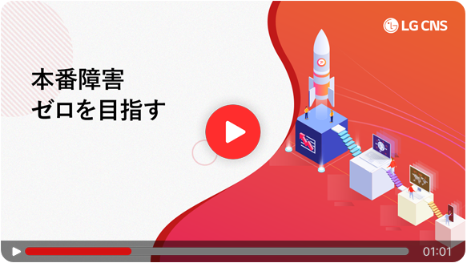
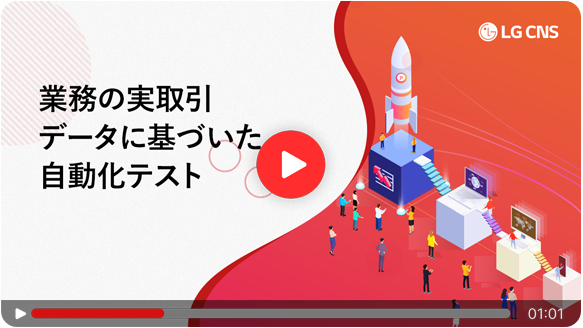
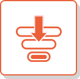

クラウド移行やインフラ更改時の、
エラーや不具合が心配ですか？
PerfecTwin
(パーフェクツイン)
にお任せください！
PerfecTwinは、100%本番トランザクションをテストデータとして活用する
「現/新 比較テスト自動化ソリューション」です。
エラーや不具合のない、完璧なシステム移行を実現します。
お問い合わせはこちら


現/新システムの
自動比較テストが可能
本番トランザクションデータで
自動テストを実施
本番稼働前に潜在的な
エラーや不具合を検出
PerfecTwin紹介資料
Japan IT Week
2024/10/23(水)～25(金)
幕張メッセ 1～8ホール
10:00～18:00(最終日のみ17:00まで)
ブース番号：A8-6（2ホール）
セミナー日時：10月23日(水)
15:00~15:45
この度弊社では、日本最大のIT・DX展示会 Japan IT Week 2024 秋に、 本番トランザクションによる現新比較テスト自動化ソリューション 「PerfecTwin（パーフェクツイン）」と「PerfecTwin ERP Edition」を、 出展する運びとなりましたので、その旨お知らせいたします。 展示ブースでは、「PerfecTwin」２製品の製品紹介、および販売パートナー 募集を行います。また、製品を網羅的に紹介する会場内セミナーも実施します。 テスト自動化ソリューションをお探しの企業様、新たなIT系商材をお探しの 企業様、ぜひ当社ブースへご来場ください。心よりお待ちしております。
この度弊社では、日本最大のIT・DX展示会 Japan IT Week 2024 秋に、 本番トランザクションによる 現新比較テスト自動化ソリューション 「PerfecTwin（パーフェクツイン）」と 「PerfecTwin ERP Edition」を、 出展する運びとなりましたのです。 展示ブースでは、「PerfecTwin」 ２製品の製品紹介、 および販売パートナー募集を行います。 また、製品を網羅的に紹介する会場内 セミナーも実施します。 テスト自動化ソリューションをお探しの 企業様、新たなIT系商材をお探しの 企業様、 ぜひ当社ブースへご来場ください。 心よりお待ちしております。
PerfecTwin PoC
無償キャンペーン情報
対象製品
現新比較テスト自動化ソリューション 「PerfecTwin」
内 容
上記製品のライセンス費用およびSE費用を、
無償にて提供いたします
対 象
対象製品の利用を目的とする、PoC（概念検証）
をご希望の企業様
※毎月1社様限定
対象期間
2024年12月31日（火）お申込み分まで
現行システムの本番トランザクションで、新システムとの【比較テストを自動化】
現行システムからキャプチャされた大量のトランザクションを基盤として、新規システムでの全数テストを自動実施。さらに、結果を自動比較して、エラーや不具合を事前に検出します。

新システムの【性能検証を自動化】
本番システムへの大量の同時アクセスを、新規システムで自動的に再現することで、 新規システムの性能検証の信頼性を高めます。
本番稼働の判定基準を[定量的検証数値で提供]
本番稼働判定のための機能テスト、および性能安定性のテスト結果を、本番トランザクション単位の比較により定量的検証数値で提供。本番稼働に向けての信頼性を提供します。
[導入後のエラー発生率 0％]の高い信頼性
クラウド移行、インフラ更改(U2L、DB更改)、SI、SM、ERP移行など大規模のインフラ更改構築で、
エラー発生率0％を達成。約70社の導入顧客から、非常に高い評価をいただいています。
大手建設会社 S社
クラウド移行
お客様A
「性能結果を比較確認することができ、システム本番稼働判定に役立ちました。」
お客様B
「システム本番稼働後に大きな問題なく、早期に安定的にシステムを運営することができたので、さっそく次の案件を準備しています。」
運用会社
「本番稼働後のシステムリソースモニタリングの結果がPerfecTwinのテスト結果と同一であったため、お客様からの信頼も厚くなりました。」
大手流通会社 C社
クラウド移行
お客様A
「10年前からこのようなソリューションがあればいいと思っていましたが、本当にこのようなソリューションがあるとは想像できませんでした。」
お客様B
「開発者が定時に退社できることが増えました。 従業員の働き方改革にも役立ちます。」
運用会社
「運用と同時にテストができて、開発の完成度が非常に良くなりました。その上、性能まで検証してくれるので、導入しない理由がありません。」
LG CNSが提供する、
本番トランザクションによる現/新比較テスト自動化ソリューション
PerfecTwin
導入のご相談 / お問い合わせ
LG CNS Japan
担当者: 洪 鍾杓 (ホン ソクピョ) ※日本語にて対応いたします Mail: hong-sp@lgcns.com | Tel: 045-323-9069
LG CNS Testing Solution Youtube